Kamino v8 screen reviewKamino v8: actual app screens
Fresh local browser captures from the extracted app, including its production web build. These are web renders, not native-device screenshots. Click a screen to inspect its original size.
Reviewed October 3, 2026. The 320-pixel Explore captures demonstrate clipping. Some screens contain disposable test communities created during verification.Welcome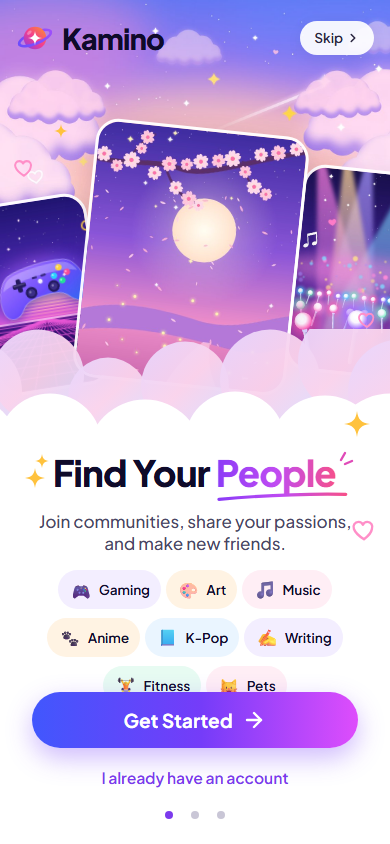
Login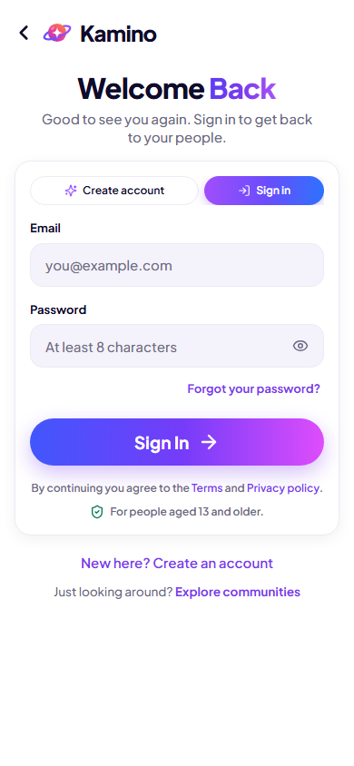
Interest onboarding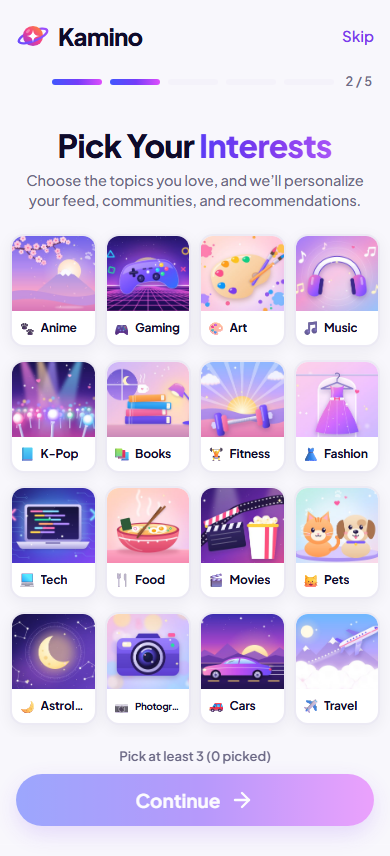
Home — built output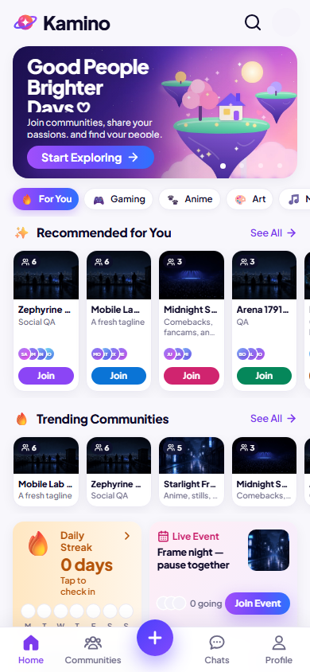
Explore — built output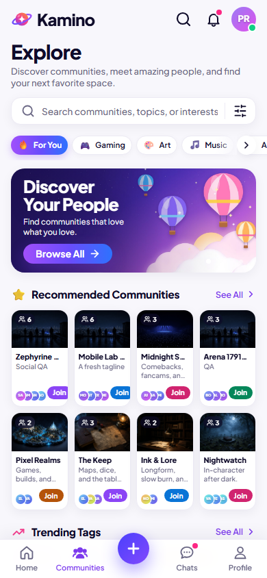
Community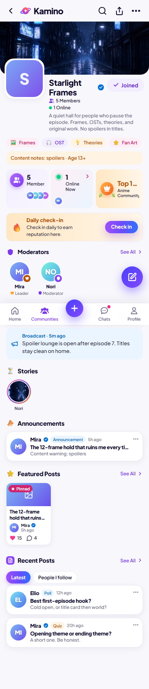
Create — built output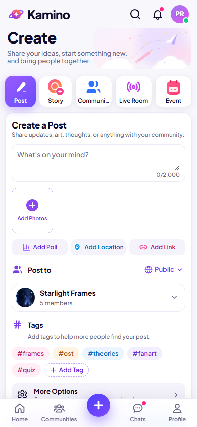
Chats and live rooms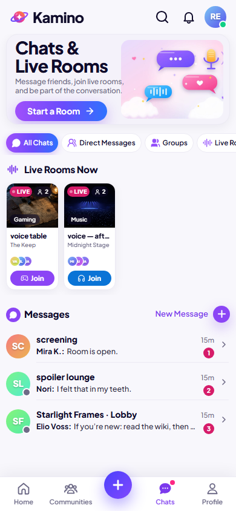
Notifications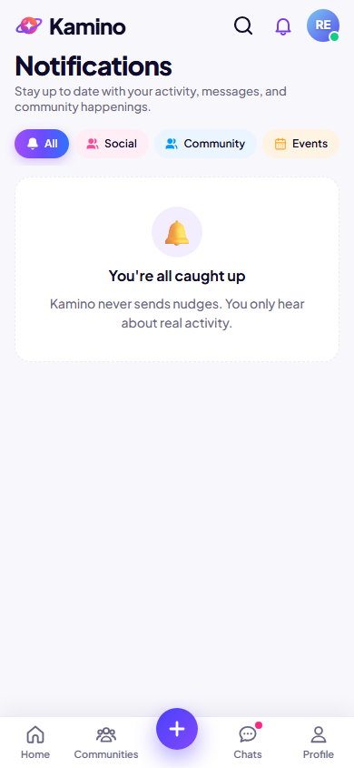
Profile — built output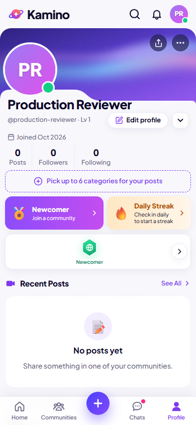
Post and comments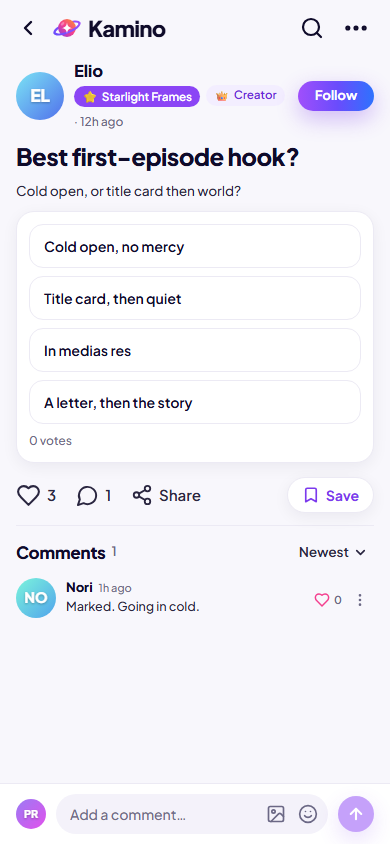
Conversation and watch party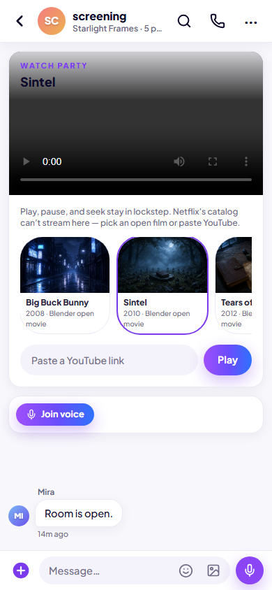
Explore at 320 pixels — clipped controls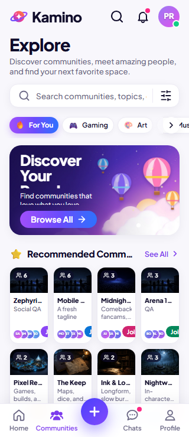
Dark Explore at 320 pixels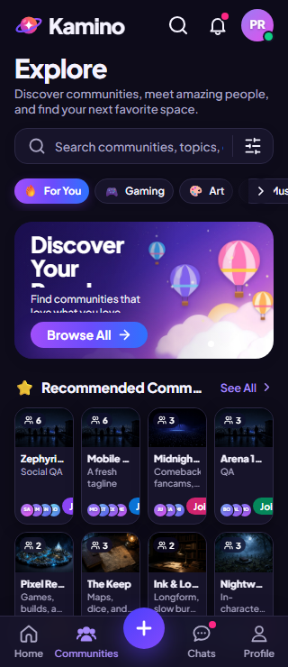
Full Settings page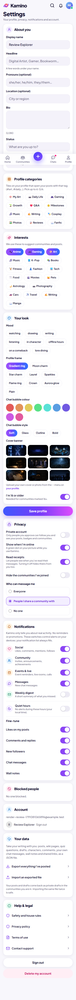
Full desktop Home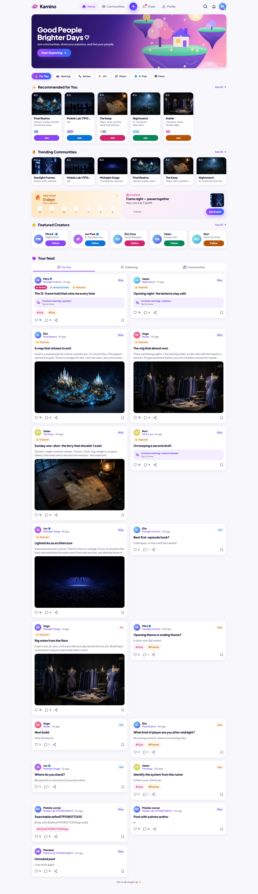